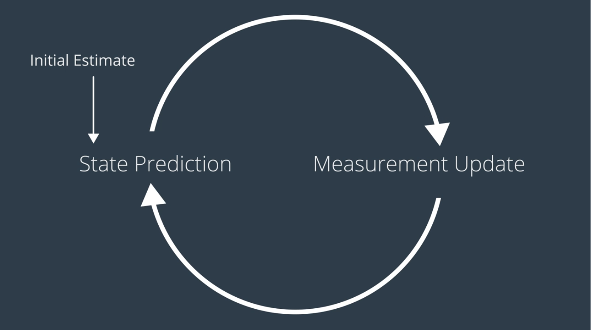
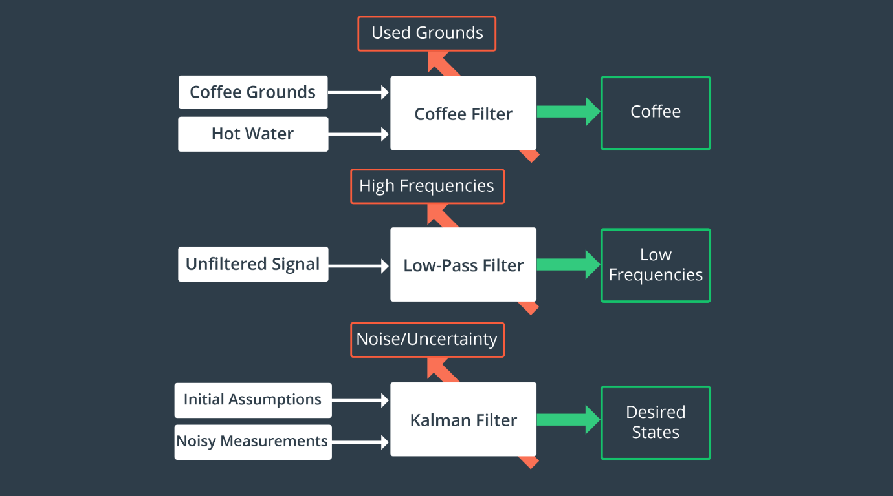
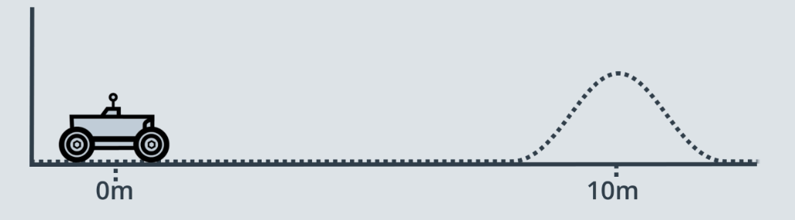
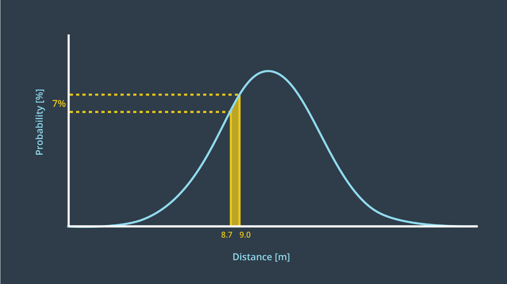
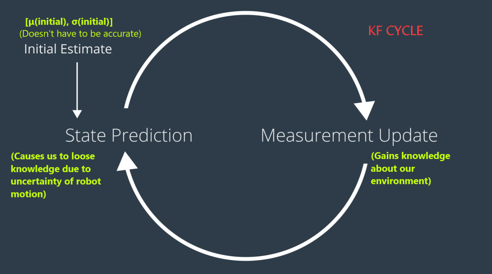
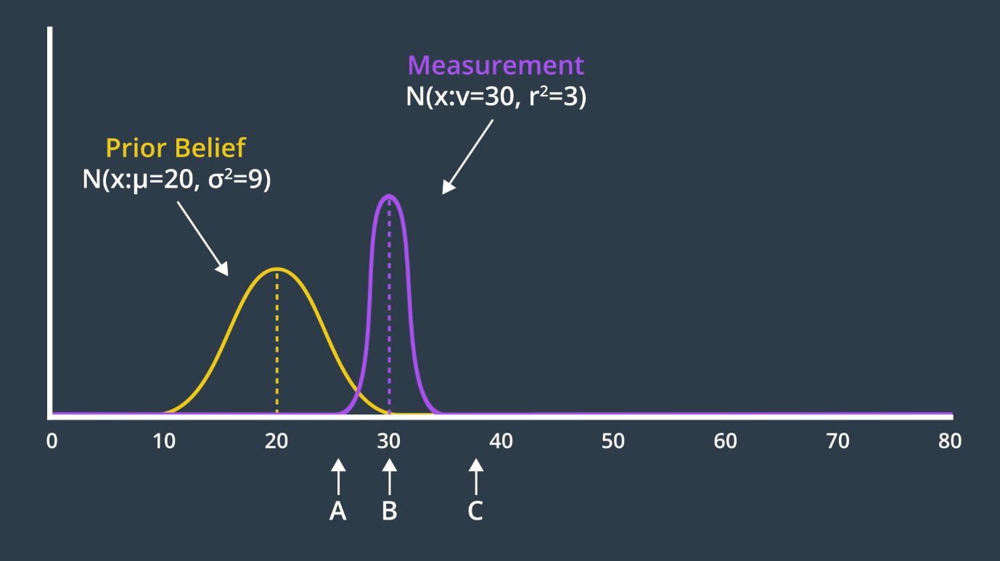
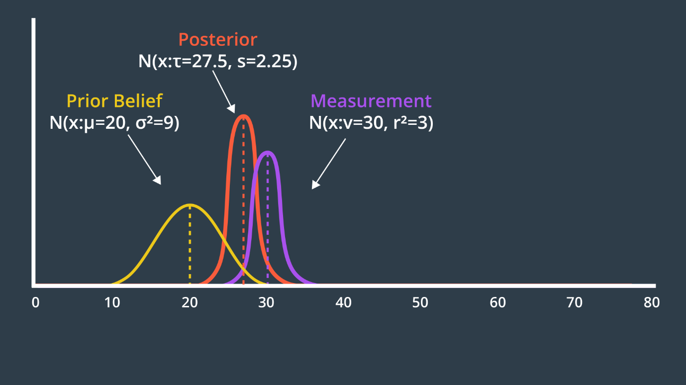
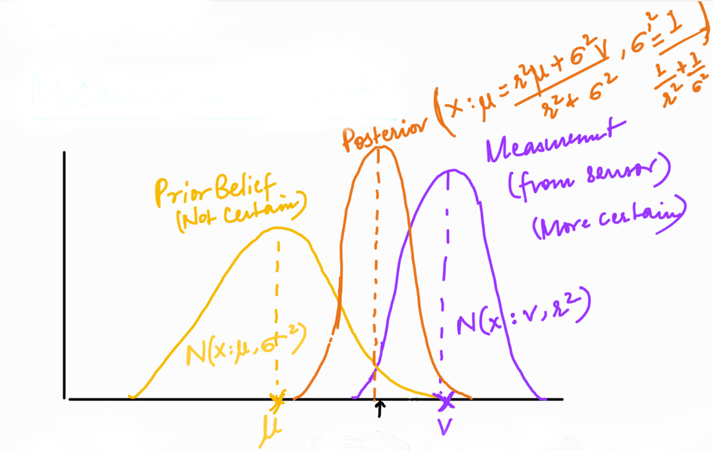
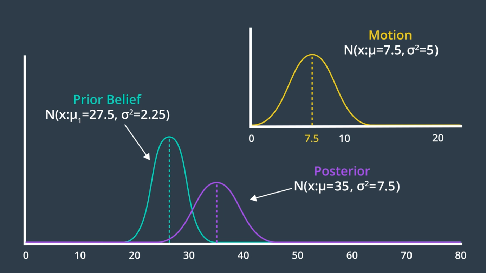
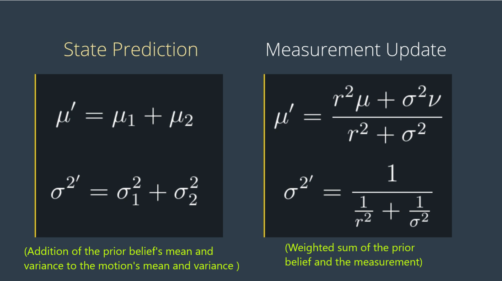

Localization
Introduction to Localization
Localization is the challenge of determining robot's pose in a mapped environment. We do this by implementing a probabilistic algorithm to filter noisy sensor measurement and track robot's position and orientation.Here is an example of a robot inside of a mapped environment. This robot's job is keep house's floor clean. However, insead of starting at its charging dock, it's starting position is elsewhere in the room. The robot is moving around, taking measurements trying to figure out where it could be positioned in the room. Since this is a probabilistic model, the robot might have a few guesses as to where it is located in the room. However, over time, hopefully, it should narrowed down on a precise location. Robot's pose is X and Y positioned coordinates within the room and θ, its orientation.
- Extended Kalman Filter is the most common Gaussian Filter that helps in estimating the state of non-linear models.
- Markov Localization is a Bayes Filter localization algorithm which maintains the probability distribution over the set of all possible positions and orientations the robot might be located at.
- Grid Localization is referred to as Histogram Filter since it is capable of estimating the robot's pose using grids.
- Monte Carlo Localization is also known as Particle Filter because it estimates the robot's pose using particles.
The amount of information present and the nature of the environement that a robot is operating in determines the difficulty of the localization tasks.
- Local Localization Problem
- The easiest localization problem is called position tracking, also known as local localization.
- In this, the robot knows its initial pose. Localization challenge entails estimating robot's pose as it moves around the environment.
- Uncertainty is limited to the region surrounding the robot.
- Global Localization Problem
- In this case, the robot's initial pose is unknown and the robot must determine its pose relative to the ground truth map.
- Uncertainty is much more compared to position tracking, making it a harder problem.
- Kidnapped Robot Problem
- The most challenging localization problem.
- This problem is just like global localization, except that the robot may be kidnapped at any time and moved to a new location on the map.
- Localization algorithms are not free from errors. There would be instances of robot miscalculating where it is. The kidnapped robot problem teaches the robot to recover from such instances and once again correctly locate it on the map. Doing so is critical to building robot's localization algorithms.
Resources for Additional Localization Knowledge:
- Textbook: Probabilistic Robotics by Sebastian Thrun, Wolfram Burgard, and Dieter Fox.
Kalman Filters
Kalman Filter is an estimation algorithm, used to estimate the value of variable in real time as the data is being collected.The reason why KF is noteworthy is that it can take data with a lots of uncertainties or noise in the measurement and provides very accurate estimate of the real values.
KF is a continuous iteration of following two steps:
- Measurement Update: The first step is the measurement update. We use the recorded measurement to update our state.
- State Prediction: The second step is the state prediction. We use the information we have about our current state to predict what the future state would be. At the start we use the initial guess.
We continue to iterate through above two steps and it doesn't take many iterations for an estimate to converge on the real value.
Another way of looking at a Kalman Filter is just like we’d look at any other filter. What does it take as an input, what does it filter out, and what important substance does it let through? The graphic below compares a household coffee filter, an engineering low-pass filter, and a Kalman filter.
KF is used to estimate the state of a system when the measurements are noisy.
There are three variation of KF:
- Standard Kalman Filter: Applied to the linear systems where the output is proportional to the input.
- Extended Kalman Filter (EKF): Applied to non-linear systems.
- More applicable in robotics where as the real world systems are more often non-linear than linear.
- Unscented Kalman Filter (UKF): Appropriate for highly non-linear systems, where EKF may fail to converge.
Before we dive into the details of the Kalman Filter, it's important to understand few intricacies of robot operation that will get context that why a KF works the way it does. Let's explore two different robot worlds. The ideal world and the real world. In both the worlds, the robots know their starting positions. In the ideal world, the robot is instructed to move 10m forward. The robot proceeds to do so and stops precisely 10m from its starting position. The movement was error-free. The robot in the real world is also asked to move forward 10m. In the real world, however, there are few complexities that result in the robot movement being imprecise. The robot may incounter imperfections in the terrains, experience wheel slip or be adversely affected by other factors in its environment. Upon completion of its movement, the robot may not be at the 10m mark precisely, but some distance ahead of or behind its desired goal. This error would be different with every movement performed due to the randomness encountered in the environment.
Let's look at this movement on a graph. If we were to record a real world robot moving a 10m forward a total of 100 times, the result would look like data shown above. The data resembles a Bell curve, also known as a Gaussian. This graph displays a probability distribution of the robot's final position after multiple iterations of the movement. The X-axis represents the distance travelled by the robot and the Y-axis represents how often the robot stopped at that distance. This curve shows if we ask a robot to move, it is most likely to stop at the 10m mark, but at times it can find itself as far off as 12m mark.
The shape of the Gaussian is specific to the robot in the environment it is operating in. If the robot is driving around a factory floor, there would be a fewer environment factors to affect it, so it's movement would be more precise and its distribution would be more narrow. On the other hand, if the robot is performing a rescue mission, it may have any number of environemental factors affect it, such as adverse weather or unexpected movement due to unstable terrain. The result is a much wider Gaussian distribution. But the distribution of the uncertainty is not the only problem here. If a robot were to continue to take blind movements one after the other, then it's location would be less and less certain with every movement. We can see this displayed on the graph. Every movement is uncerain and these uncertainties stacked up over time. With all these uncertainties in motion, our robot needs a way to sense its own action but unfortunately, sensory data is often uncertain too.
Let's go back to our two robots world to explore this. Let's say we are interested in knowing the speed a robot and now we have sensor onboard for the robot to measure this. In an ideal world, the sensor would measure the speed of the robot accurately and response to change in the speed instantaneously. However, in the real world, the sensor measurement would contain some amount of noise. An expensive encoder may come close to what we would expect in an ideal world, but if we are using hobbyist grade robotic sensors, they will exhibit imperfect measurement.
Advantages of Kalman Filters:
- KF can very quickly estimate the true value of variable being measured. Unlike other algorithms that require a lots of data to measure the estimate, the KF is able to do so after just few sensor measurement. It does so by using initial guess and by taking into account the expected uncertainty of a sensor or movement. (Both movement and sensory measuements are noisy in the real world!)
-
GPS is only accurate for few meters.
Sensor Fusion -> uses KF (uses data from multiple sensors)
1D Gaussian
At the basis of the Kalman Filter is the Gaussian distribution, sometimes referred to as a bell curve or normal distribution. (Rover example) - after executing one motion, the rover’s location was represented by a Gaussian. It’s exact location was not certain, but the level of uncertainty was bounded. It was unlikely that the rover would be more than a few meters away from its target location, and it would be nearly impossible for it to show up at the 50 meter mark.
This is the role of a Kalman Filter - after a movement or a measurement update, it outputs a unimodal Gaussian distribution. This is its best guess at the true value of a parameter.
Gaussian Distribution
A Gaussian distribution is a probability distribution, which is a continuous function. The probability that a random variable, x, will take a value between x_1 and x_2 is given by the integral of the function from x_1 to x_2.
In the image below, the probability of the rover being located between 8.7m and 9m is 7%.
A Gaussian is characterized by two parameters - its mean (μ) and its variance (σ²). The mean is the most probable occurrence and lies at the centre of the function, and the variance relates to the width of the curve. The term unimodal implies a single peak present in the distribution.
Gaussian distributions are frequently abbreviated as N(x: μ, σ²)
The formula for the Gaussian distribution is:
Notice that the formula contains an exponential of a quadratic function. The quadratic compares the value of x to μ, and in the case that x=μ, the exponential is equal to 1 (e^0 = 1). You’ll note here, that the constant in front of the exponential is a necessary normalizing factor.
Just like with discrete probability, like a coin toss, the probabilities of all the options must sum to one. Therefore, the area underneath the function always sums to one.
What is represented by a Gaussian distribution?
- Predicted Motion
- Sensor Measurement
- Estimated State of Robot
The Kalman Filter treats all noise as unimodal Gaussian. In reality, that’s not the case. However, the algorithm is optimal if the noise is Gaussian. The term optimal expresses that the algorithm minimizes the mean square error of the estimated parameters.
Designing 1D Kalman FIlter
Since the robot is unable to sense the world around it with complete certainty, it holds an internal belief which is its best guess at the state of the environment including itself.
The robot constrained to a plane can be described with three state variables, two coordinates X and Y to identify its positions and one angle yaw to identify its orientation. These are state variables, denoted by x. A robot can perceive its environment using sensors which produces a mesurement, denoted by z. Next are control actions such as movement can change the state of our environement, denoted by u.
Variable Naming Conventions

Measurement Update
Mean Calculation
Let's suppose our robot's current position is near the 20m mark but we are not incredibly certain so the Prior Belief Gaussian has a rather wide probability distribution. Next our robot takes its first sensory measurement providing with data to work with. The measurement data z is more certain so it appears a narrow Gaussian with a mean of 30.
Given a prior belief about our robot's state and the measurement that it collected where do we think the robot's new belief will be?
The new belief would have a mean somewhere inbetween the two Gaussians since it is combining information from both of them. Since the measurement update is more certain, the new mean would lie closer to the measurement update.
The new mean is a weighted sum of the prior belief and measurement means. With uncertainty, a larger number represents a more uncertain probability distribution. However, the new mean should be biased towards the measurement update, which has a smaller standard deviation than the prior. How do we accomplish this?
The answer is - the uncertainty of the prior is multiplied by the mean of the measurement, to give it more weight, and similarly the uncertainty of the measurement is multiplied with the mean of the prior. Applying this formula to our example generates a new mean of 27.5, which we can label on our graph below.
Variance Calculation
Next, we need to determine the variance of the new state estimate.
Would the variance of the new state estimate be less confident than our prior, in between our prior and measurement, or more confident than our measurement?
The two Gaussians provide us with more information together than either Gaussian offered alone. As a result, our new state estimate is more confident than our prior belief and our measurement. This means that it has a higher peak and is narrower.
The formula for the new variance is presented below.
Entering the variances from our example into this formula produces a new variance of 2.25. The new state estimate, often called the posterior, is drawn above.
State Prediction
State Prediction is the estimation that takes place after an inevitably uncertain motion.
Since the measurement update and starte prediction are iterative cycle, it makes sense for us to continue where we left off. After taking into account the measurement, the posterior distribution was a gaussian with a mean of 27.5 and a variance of 2.25. However, simce we moved on to the state prediction step in the Kalman Filter cycle, this gaussian is now referred to as the Prior Belief. This is the robot's best estimate of its current location.
Next, the robot executes a command, move forward 7.5m. The result of this motion is a gaussian distribution centered around 7.5m with a variance of 5m. Calculating the new estimate is as easy as adding the mean of the motion to the mean of the prior. Similarly, adding the variances together to produce the posterior gaussian.

Multivariate Gaussians
Most robots that we would be interested in modeling are moving in more than one dimension. For instance, a robot on a plane would have an x & y position.
The simple approach to take, would be to have a 1-dimensional Gaussian represent each dimension - one for the x-axis and one for the y-axis.
Do you see any problems with this? Why couldn't we use multiple 1-dimensional Gaussians to represent multi-dimensional systems? Because there may be correlations between dimensions that we would not be able to model by using independent 1-dimensional Gaussians.
2-Dimensional Gaussian

Mean
The mean is now a vector,
Covariance
The multidimensional equivalent of variance is a covariance matrix,
The covariance matrix represents the spread of the gaussian in 2-D. The diagonal of the matrix ( \sigma_{x}^2 and \sigma_{y}^2) represent the variances, while the off-diagonal elements ( \sigma_{y}\sigma_{x} and \sigma_{x}\sigma_{y}) represents correlation terms. These terms are non-zero if there is a correlation between the variance in one dimension and the variance in another. When that is the case, the Gaussian function looks 'skewed' when looked at from above.
An N-D (N-Dimensional) Gaussian would have a covariance matrix that is of size N x N.
An important fact to note is that the covariance matrix is always symmetrical, i.e., \sigma_{x}\sigma_{y} = \sigma_{y}\sigma_{x}
To make better sense of what a covariance matrix represents, let's take a look at few examples of 2-D Gaussians.
If X and Y variances are small and equal to each other, then the 2-D Gaussian representation would be circular. In such a case, we are equally certain about the location of an object in each dimension.
However, it's possible that we are quite certain about the location of an object in X-axis but not so much in Y-axis. In such a case, the contour lines of Gaussian would start to take on an oval shape.
In the previous case, the correlation terms are 0. If the correlation terms are non-zero, then the two axes are correlated and we would have skewed oval. Depending on whether the terms multiplied out to a +ve value or -ve value, our oval would skewed to right or left respectively. Then once we gain information about one axis, it would reveal information about the other due to the correlation.
A Multivariate Gaussian can be modelled using the following formula:
where D represents the number of dimensions present. If D=1, the formula simplifies to the formula for the one-dimensional Gaussian that we have seen before.
x and \mu are vectors, and \Sigma is a matrix.
Multidimensional Kalman Filters
In our 1-D examples, the system state was represented by one variable. In n-dimensional systems, the state is a vector with n state variables.
Example: In a 2-D world, states could be \large \begin{bmatrix} x \\ y \end{bmatrix} (x and y positions of a robot), or \large \begin{bmatrix} x \\ \dot{x} \end{bmatrix} (position and velocity of a robot)
When working in 1-D, the state has to observable, meaning it has to be something that can be measured directly.
In multidimensional states, there may exist hidden state variables, ones that we can't measure with the sensors available. However, we may be able to infer their values from other states and measurements. In the example \large \begin{bmatrix} x \\ \dot{x} \end{bmatrix} , the location of the robot is observable while its velocity is not, making it a hidden state variable. However, a robot's position and velocity over time are linked through a very simple formula: \large x' = x + \dot{x} \Delta t
Let's look at this on a graph! If initially the position of the robot is known but its velocity is not, then the estimate of the robot's state would like as shown above. A gaussian that is very narrow in the \large x dimension, representing confidence about robot's location and very wide along \large \dot{x} dimension since the robot's velocity is completely unknown. Next, a state prediction can be calculated. This is where a Kalman Filter starts to get exciting. Knowing the relationship between a hidden variable and observable variable is key.

Let's assume one iteration of a kalman Filter taskes 1s, i.e., (\Delta t = 1). Now using the above formula we can calculate the posterior state for each possible velocity. For example, if the velocity is 0, the posterior state would be identical to the prior. Similarly, put different values of velocity in above formula to get different posterior states. From this, we can draw a posterior gaussian like shown above. This doesn't yet tell us anything about the velocity. It just graphs the correlation between velocity and the location of the robot.
Next is a measurement update. Let's see if it can provide us with sufficient information to identify the velocity of the robot.
The initial belief was useful to calculate the state prediction but has no additional value and the result of the state prediction can be called prior belief for our measurement update.
Let's say the new measurement suggests a new location of the robot (like x=50). If we apply measurement update to the new prior, we will have a very small posterior, centered around
x=50 and \dot{x}=15. It's the exact same measurement update we applied before, implemented in 2-D. Check the second graph above. The posterior belief is just the weighted sum of the prior belief and the measurement and more confident than either the prior or the measurement. Then the relationship between the two dimension narrows down to posterior for the \dot{x} axis. After all, if the robot moved from x=35 to x=50
in 1s, the speed should be trivial to calculate.
So, it seems the two iterations of the KF cycle were enough to infer the robot's velocity. Continuing iteration through the measurement update and state prediction steps will update the robot's internal state to keep it aligned with where it is in the real world.
Design of Multi-Dimensional Kalman Filters
State Transition
The formula below is the state transition function that advances the state from time t to time t + 1. It is just the relationship between the robot’s position, x, and velocity, \dot{x}. Here, we will assume that the robot’s velocity is not changing.
We can express the same relationship in matrix form, as seen below. On the left, is the posterior state (denoted with the prime symbol, '), and on the right are the state transition function and the prior state. This equation shows how the state changes over the time period, \Delta t. Note that we are only working with the means here; the covariance matrix will appear later.
The State Transition Function is denoted F, and the formula can be written as so,
In reality, the equation should also account for process noise, as its own term in the equation. However, process noise is a Gaussian with a mean of 0, so the update equation for the mean need not include it.
Now, what happens to the covariance? How does it change in this process?
Sidenote: While it is common to use \Sigma to represent the covariance of a Gaussian distribution in mathematics, it is more common to use the letter P to represent the state covariance in localization.
If you multiply the state, x, by F, then the covariance will be affected by the square of F. In matrix form, this will look like so:
However, your intuition may suggest that it should be affected by more than just the state transition function. For instance, additional uncertainty may arise from the prediction itself. If so, you’re correct!
To calculate the posterior covariance, the prior covariance is multiplied by the state transition function squared, and Q added as an increase of uncertainty due to process noise. Q can account for a robot slowing down unexpectedly, or being drawn off course by an external influence.
Now we’ve updated the mean and the covariance as part of the state prediction.
Quiz 1:
You are tracking the position and velocity of a robot in two dimensions, x and y. The state is represented as so,
Find the state update/transition function, F, that will advance the state from time t to time t + 1 based on the state transition equation: \large x' = Fx
Quiz 2:
You are tracking the position, velocity, and acceleration of a quadrotor in the vertical dimension, z. The state of the quadrotor can be represented as so,
Find the state update function, F, that will advance the state from time t to time t + 1 based on the state transition equation: \large x' = Fx
Measurement Update
Next, we move onto the measurement update step. If we return to our original example, where we were tracking the position and velocity of a robot in the x-dimension, the robot was taking measurements of the location only (the velocity is a hidden state variable). Therefore the measurement function is very simple - a matrix containing a one and a zero. This matrix demonstrates how to map the state to the observation, z.
This matrix, called the Measurement Function, is denoted H.
For the measurement update step, there are a few formulas. First, we calculate the measurement residual, y. The measurement residual is the difference between the measurement and the expected measurement based on the prediction (ie. we are comparing where the measurement tells us we are vs. where we think we are). The measurement residual will be used later on in a formula.
Next, it's time to consider the measurement noise, denoted R.
Above formula maps the state prediction covariance into the measurement space and adds the measurement noise. The result, S, will be used in a subsequent equation to calculate the Kalman Gain.
Kalman Gain
Next, we calculate the Kalman Gain, K. As you will see in the next equation, the Kalman Gain determines how much weight should be placed on the state prediction, and how much on the measurement update. It is an averaging factor that changes depending on the uncertainty of the state prediction and measurement update.
These equations may look complicated and intimidating, but they do nothing more than calculate an average factor.
Two extreme cases for the Kalman Filter:
- Case: Sensor we are measuring with is perfectly accurate, then the measurement noise R would be a matrix of 0s, i.e.,
- Case: Negligible sensor with utterly imperfect measurements, one that we know we cannot rely on.
The Kalman Gain is equal to the inverse of the measurement function, H.
Next step is updating the mean using the Kalman Gain.
The new mean is entirely made of the measurement. We have thrown out any information that state prediction provided because it's not needed. The measurement is perfect!
In such a case, R would be a matrix of ∞s, i.e.,
The new mean is equal to the state prediction and the measurement update is not included at all as it is unreliable.
The two extremes for the Kalman Filter are a perfect sensor and a negligible sensor. In these two cases, the new state is either exclusively dependent on measurement update or exclusively reliant on the state prediction. In reality, we will more often find the Kalman Gain is somewhere in between the two. It's an averaging factor evaluating which of the measurement update or state prediction should be trusted more based on the measurement noise and the process noise.
The last step in the Kalman Filter is to update the new state’s covariance using the Kalman Gain.
Kalman Filter Equations
These are the equations that implement the Kalman Filter in multiple dimensions.
State Prediction:
Measurement Update:
Calculation of Kalman Gain:
Calculation of Posterior State and Covariance:
The Kalman Filter can successfully recover from inaccurate initial estimates, but it is very important to estimate the noise parameters, Q and R, as accurately as possible - as they are used to determine which of the estimate or the measurement to believe more.